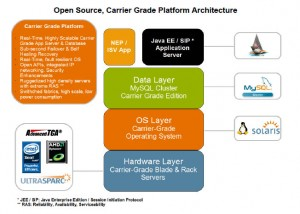

A new white paper has been published by MySQL/Sun Microsystems and it can be downloaded from http://www.mysql.com/why-mysql/white-papers/mysql_wp_cluster7_open_cgp.php
Open Source Carrier Grade Platform - using MySQL Cluster CGE
Abstract:
The convergence of communication networks onto one which is IP (Internet Protocol) based is revolutionizing today’s telecommunications industry. Communications Service Providers (CSPs) are challenged to deliver compelling new personalized services with greater agility and lower costs than ever before. The very survival of Service Providers depends on their ability to generate new revenue streams and increase Average Revenue Per User (ARPU), whilst at the same time delivering significant improvements in operational efficiency and time to market.
Network and IT infrastructure used for service delivery has traditionally been based on proprietary hardware and software, either developed in-house or supplied by proprietary vendors. The challenge this has presented to Network Equipment Providers (NEPs) and Communications Service Providers (CSPs) is that the infrastructure is inflexible and carries a high TCO.
In addition to the challenges above, risk of vendor lock-in and the need for interoperability through open APIs have driven the migration to standards-based hardware and open-source software for new carrier-grade systems used in next generation networks. We call such systems “open source, carrier-grade platforms”.
The drive to adopt open architectures extends into a core enabler of network convergence and service delivery – the database. Whether Service Providers are looking to deploy new Web/Telco 2.0 applications to mobile internet users or consolidating subscriber data within the network to support greater service personalization and targeted advertising, the database plays a key enabling role.
These databases must make information available to new and existing applications in order to maximize interoperability and streamline operations. It is this trend which puts even more demands on the availability, scalability and performance of the database. Real-time, carrier-grade databases with dynamic scalability, flexible data access methods, broad platform support and simplified administration are key to meeting the demands of many of These new communications services.
With the rapid shift from closed, expensive and proprietary technology, MySQL has grown to become the world’s most popular open source database. In this paper we explore how an open source carrier grade platform is able to cost-effectively meet the communication industry’s high availability, scalability and real-time performance requirements. At the same time we will explore the issues of cost and interoperability with established and emerging technology standards. We also examine the unique architecture and features of MySQL Cluster Carrier Grade Edition, and how they can help both equipment manufacturers and service providers overcome some of the biggest challenges facing their industry today.
{kind=link}
{kind=link}
{kind=link}
{kind=link}